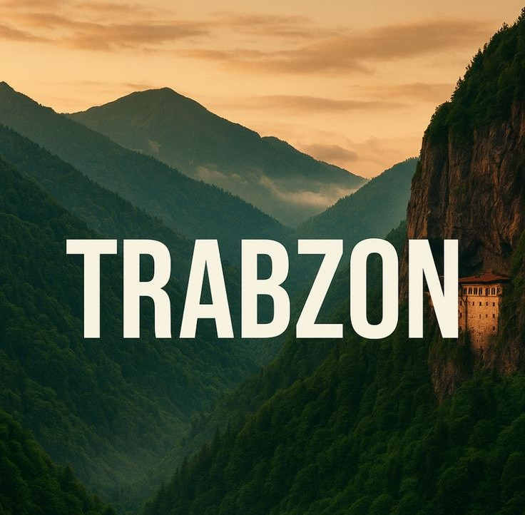
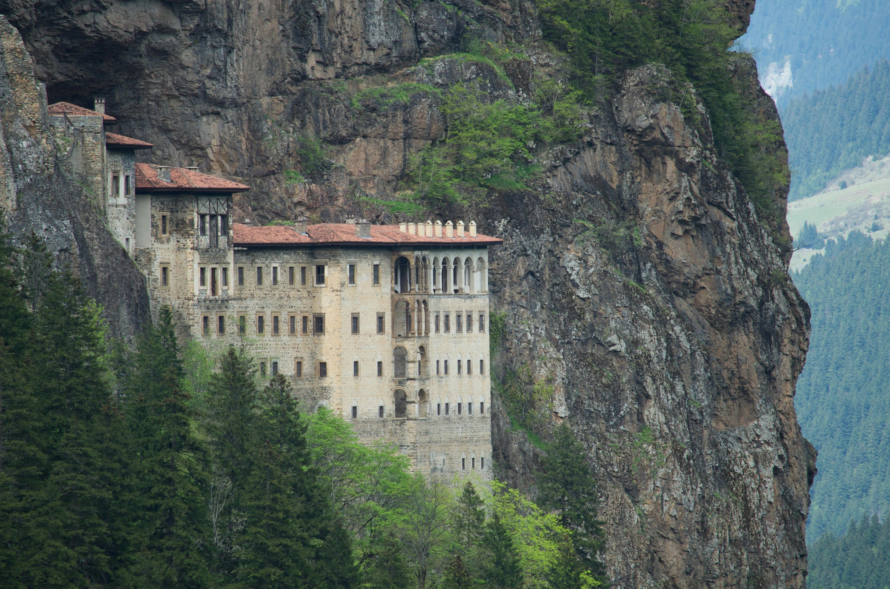
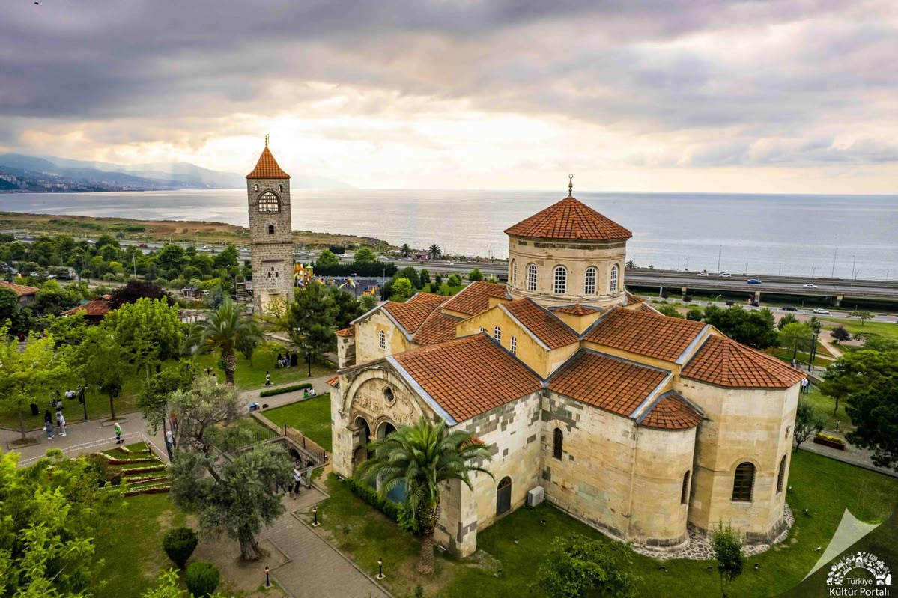

Trabzon
Şehr-i Trabzon
Karadeniz'in incisi olarak bilinen Trabzon, zengin kültürü, samimi insanları ve eşsiz mutfağıyla ziyaretçilerine unutulmaz anlar yaşatmaktadır. Hamsisi, pidesi ve çayıyla meşhur olan şehir, aynı zamanda Trabzonspor'un memleketidir.
Konum
Karadeniz kıyısı, Türkiye'nin kuzeydoğusu
Coğrafya
Yemyeşil yaylalar, deniz ve dağlar
Mutfak
Hamsi, pide, Karadeniz çayı, Mıhlama
Nüfus
~800.000
Ünlü Yerler
Sümela, Uzungöl, Boztepe, Ayasofya
Kültür
Horon, kemençe, Trabzon türküleri

Trabzon'dan Kareler

Uzungöl

Boztepe

Sümela Manastırı

Trabzon Yaylaları

Uzun Sokak

Trabzon Ayasofyası
Gezilecek Yerler
Sümela Manastırı
MS 386 yılında kurulan ve kayalıklara oyulmuş tarihi Rum Ortodoks manastırı. Denizden 1200 metre yükseklikte yer alır.
Uzungöl
Karadeniz dağlarının eteklerinde yer alan, doğal güzelliğiyle ünlü göl. Her yıl milyonlarca turisti ağırlar.
Trabzon Ayasofyası
13. yüzyılda inşa edilen ve Bizans mimarisinin en güzel örneklerinden biri olan tarihi yapı.
Trabzon Yaylaları
Yeşilin her tonunu barındıran, serin havası ve doğal güzellikleriyle ünlü yaylalar. Hamsiköy ve Ayder en popülerleridir.
Uzun Sokak
Trabzon'un tarihi çarşı bölgesi. Alışveriş, yeme içme ve şehir kültürünü bir arada sunan canlı sokak.
Boztepe
Trabzon şehrini ve Karadeniz'i kuşbakışı gören muhteşem seyir tepesi. Şehrin simgelerinden biridir.